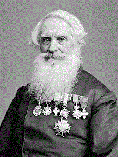
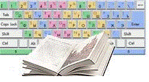
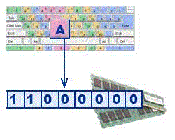
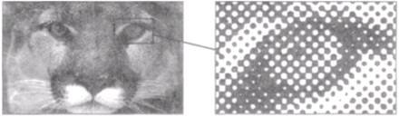
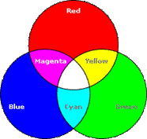
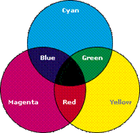
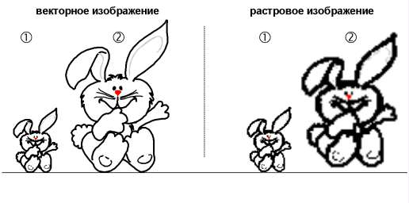

|  | Самюэл Морзе в 1838 г. изобрел код – телеграфную азбуку – систему кодировки символов короткими и длинными посылками для передачи их по линиям связи, известную как «код Морзе» или «морзянка».
Современный вариант международного «кода Морзе» (International Morse) появился совсем недавно – в 1939 году, когда была проведена последняя корректировка. |

|  | Если каждому символу алфавита сопоставить целое число, то можно с помощью двоичного кода кодировать текстовые данные. Восьми двоичных разрядов достаточно для кодирования 256 различных символов. Этого хватает, чтобы закодировать все строчные и прописные буквы английского или русского алфавита, а также знаки препинания, цифры, символы основных арифметических операций и некоторые специальные символы, например «%». |
| Технически это просто, но существуют организационные сложности. Для того чтобы весь мир одинаково кодировал текстовые данные, нужны единые таблицы кодирования, а это трудно осуществить из-за использования различных символов в национальных алфавитах. Сейчас по ряду причин наибольшее распространение получил стандарт США ANСII (American National Code for Information Interchange) – Американский национальный код для обмена информацией.
В системе кодирования ANСII закреплены две таблицы кодирования: базовая со значениями кодов от 0 до 127 и расширенная с кодами от 128 до 255. |  |
| Порядковый номер | Код | Символ |
| 0 – 31 | 00000000 – 00011111 | Символы с номерами от 0 до 31 принято называть управляющими.
Их функция – управление процессом вывода текста на экран или печать, подача звукового сигнала, разметка текста и т.п. |
| 32-127 | 00100000 - 01111111 | Стандартная часть таблицы (английский). Сюда входят строчные и прописные буквы латинского алфавита, десятичные цифры, знаки препинания, всевозможные скобки, коммерческие и другие символы.
Символ 32 - пробел, т.е. пустая позиция в тексте. Все остальные отражаются определенными знаками. |
| 128-255 | 10000000 - 11111111 | Альтернативная часть таблицы (русская).
Вторая половина кодовой таблицы ASCII, называемая кодовой страницей (128 кодов, начиная с 10000000 и кончая 11111111), может иметь различные варианты, каждый вариант имеет свой номер. Кодовая страница в первую очередь используется для размещения национальных алфавитов, отличных от латинского. В русских национальных кодировках в этой части таблицы размещаются символы русского алфавита. |
Первая половина таблицы кодов ASCII

Вторая половина таблицы кодов ASCII

- Windows-1251 – введена компанией Microsoft; с учетом широкого распространения операционных систем (ОС) и других программных продуктов этой компании в Российской Федерации она нашла широкое распространение;
- КОИ-8 (Код Обмена Информацией, восьмизначный) – другая популярная кодировка российского алфавита, распространенная в компьютерных сетях на территории Российской Федерации и в российском секторе Интернет;
- ISO (International Standard Organization – Международный институт стандартизации) – международный стандарт кодирования символов русского языка. На практике эта кодировка используется редко.
| Трудности создания единой системы кодирования текстовых данных связаны с ограниченным набором кодов (256). Если кодировать символы не 8-разрядными двоичными числами, а 16-разрядными, это позволит иметь набор из 65 536 различных кодов. Этого достаточно, чтобы в одной таблице разместить символы большинства языков. Такая система кодирования называется Unicode – универсальный код. Переход к этой системе долго сдерживался из-за недостатка памяти компьютеров, так как в системе Unicode все текстовые документы становятся вдвое длиннее. В настоящее время технические сложности преодолены и происходит постепенный переход на универсальную систему кодирования. |
|  | Растровые изображения представляют собой однослойную сетку точек, называемых пикселями (pixel, от англ. picture element). Код пикселя содержит информации о его цвете.
Для описания черно-белых изображений используются оттенки серого цвета, то есть при кодировании учитывается только яркость. Она описывается одним числом, поэтому для кодирования одного пикселя требуется от 1 до 8 бит: |
|  | Цветные изображения воспринимаются нами как сумма трёх основных цветов – красного, зелёного и синего.
Например, сиреневый = красный + синий; жёлтый = красный + зелёный; оранжевый = красный + зелёный, но в другой пропорции. Поэтому достаточно закодировать цвет тремя числами – яркостью его красной, зелёной и синей составляющих. Этот способ кодирования называется RGB (Red – Green – Blue). Его используют в устройствах, способных излучать свет (мониторы). При рисовании на бумаге действуют другие правила, так как краски сами по себе не испускают свет, а только поглощают некоторые цвета спектра. |
| Если смешать красную и зелёную краски, то получится коричневый, а не жёлтый цвет. Поэтому при печати цветных изображений используют метод CMY (Cyan – Magenta – Yellow) – голубой, сиреневый, жёлтый цвета. При таком кодировании красный = сиреневый + жёлтый; зелёный = голубой + жёлтый. |  |
|  | Растровые форматы хорошо подходят для изображений со сложными гаммами цветов, оттенков и форм (фотографии, рисунки, отсканированные данные).
Векторные форматы хорошо применимы для чертежей и изображений с простыми формами, тенями и окраской. Недостатки растровой графики – каждое изображение требует для своего хранения большое количество памяти; снижение качества изображений при масштабировании. Преимущества векторной графики - простота масштабирования изображения без ухудшения его качества; независимость объема памяти, требуемой для хранения изображения, от выбранной цветовой модели. |